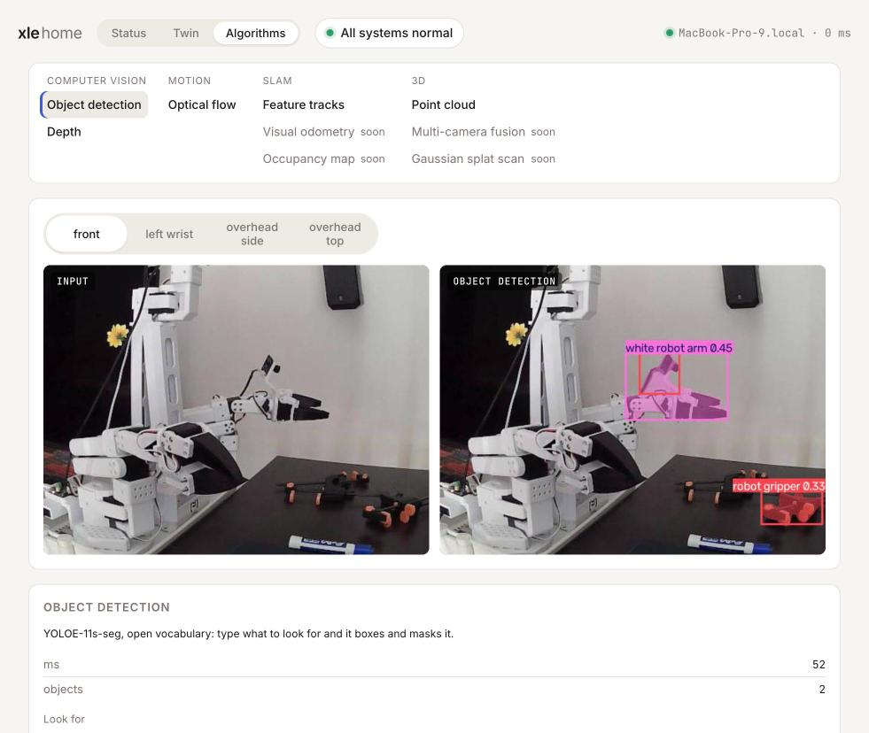
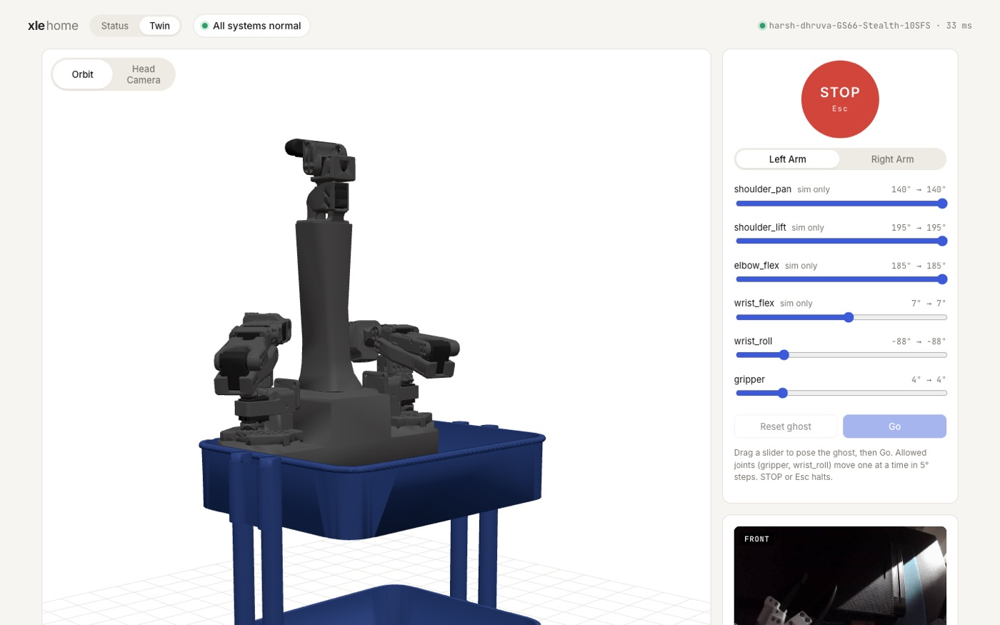
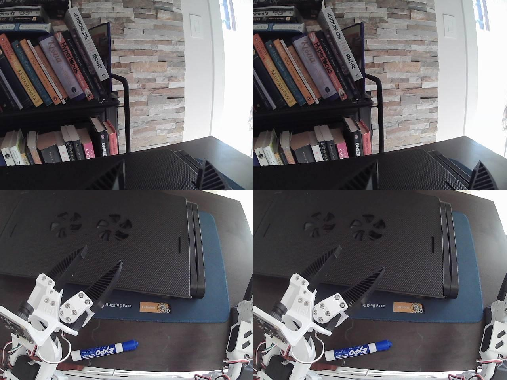
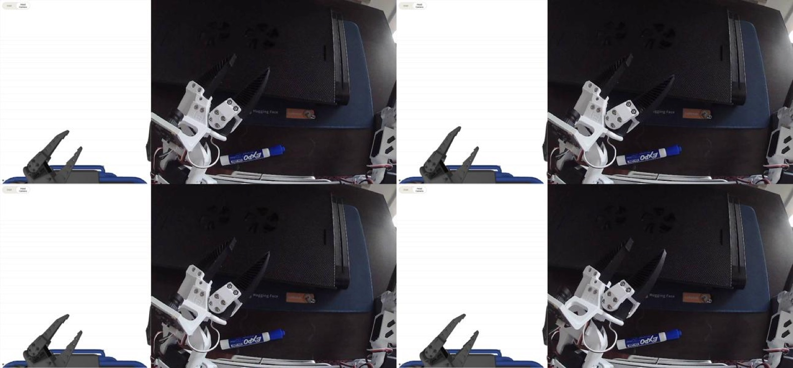
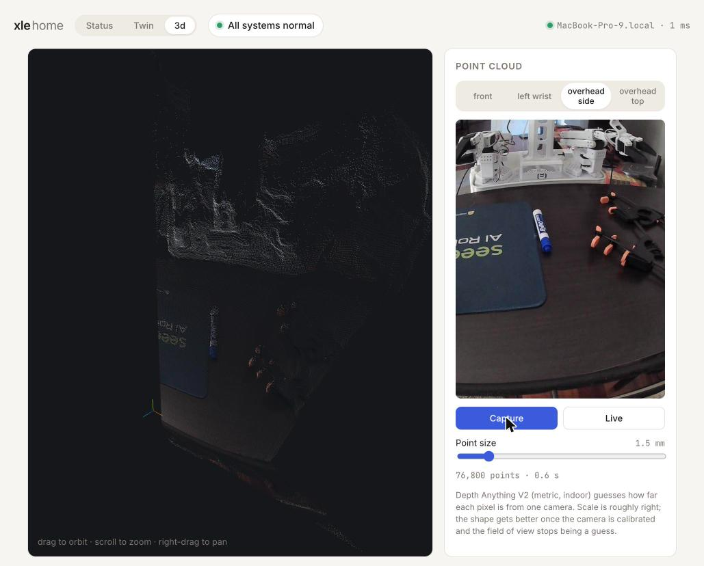

Home Robotics · Ongoing
A home robot I can reach from anywhere.
One service on the robot's laptop and a browser dashboard: see the robot from anywhere, mirror it in simulation, move it safely, and run vision on its cameras.

How it is wired
| Network | Tailscale (WireGuard) peer to peer, no port forwarding; 4 ms ping on the home network, about 30 ms from the office |
| Robot state | WebSocket push at 5 Hz, about 6 KB per snapshot; servos read at 10 Hz |
| Video | MJPEG, 640×480 at 15 fps, about 40 KB a frame (roughly 5 Mbit/s per camera) |
| Twin | MuJoCo compiled to WebAssembly, simulated in the browser, so no load on the robot |
| Safety | Arm only when healthy, lease per joint, 10 Hz heartbeat, motion stops 0.5 s after it goes quiet |
See it, mirror it, move it



Algorithms on its own cameras

| Algorithm | How it works | CPU time |
|---|---|---|
| Detection | YOLOE-11s-seg; typed prompts become CLIP text embeddings that the detector matches regions against, so new objects need no retraining | 80 to 110 ms |
| Depth | Depth Anything V2: a DINOv2 encoder and DPT decoder predict metres per pixel from one image | under 1 s |
| Point cloud | Each pixel back-projected through a pinhole model: x = (u − cx)·z / f | 0.6 s, 77k points |
| Optical flow | Farneback: polynomial fits to local patches give a motion vector per pixel | 17 ms |
| Feature tracks | ORB corners and binary descriptors matched frame to frame, the front end of visual SLAM | 4 ms |
Next
Drive the wheeled base, then map the house and let it navigate on its own.